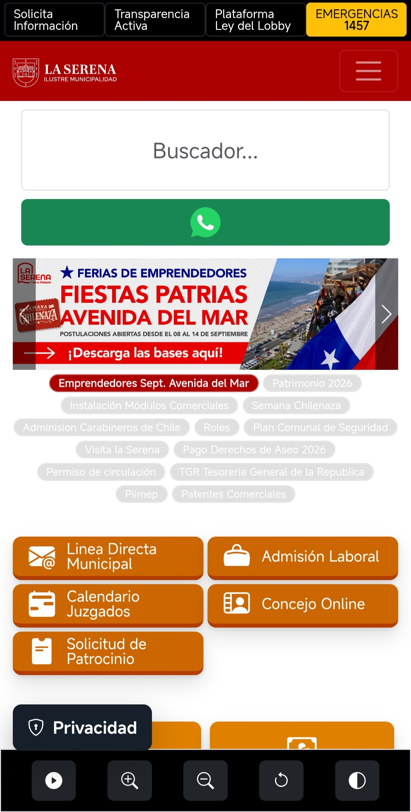
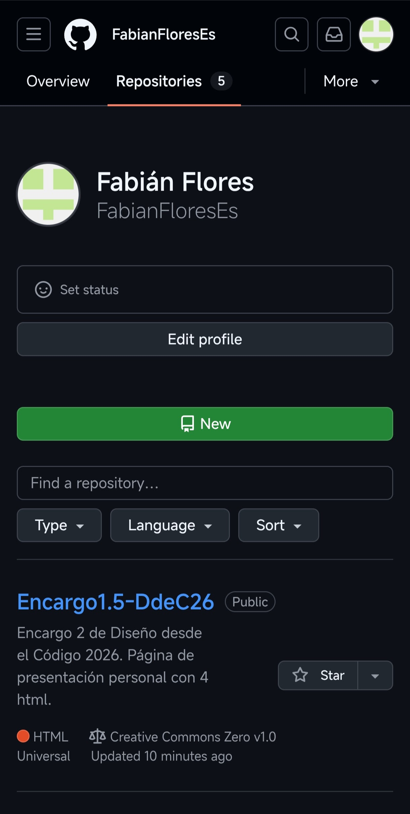

Análisis de diagramación de un sitio y una plataforma web
Análisis de diagramación web
En este encargo se analiza la diagramación y navegación de
un sitio web y una plataforma web, observando su comportamiento
en escritorio y dispositivos móviles.
El sitio seleccionado es la página de la Municipalidad de La Serena,
mientras que la plataforma seleccionada es GitHub.
Página principal de la Municipalidad de La Serena en escritorio.
1. ¿Qué partes de la pantalla se mueven y cuáles quedan fijas al hacer scroll?
La navegación del sitio se desarrolla principalmente de forma
vertical. Los banners, accesos a servicios, noticias y distintas
secciones avanzan junto con el scroll y forman parte del flujo
normal de la página.
No existe una barra lateral permanente que acompañe al usuario
durante todo el recorrido. La navegación depende principalmente
del encabezado y del menú superior, mientras que el resto del
contenido se presenta de manera sucesiva hacia abajo.
2. ¿Cómo se distribuyen las columnas?
En escritorio, el sitio no mantiene una única distribución de
columnas. Algunas secciones ocupan gran parte del ancho disponible,
mientras que otras utilizan grupos de elementos organizados en
varias columnas.
La página funciona mediante un contenedor principal que cambia
su distribución interna dependiendo del tipo de información que
necesita presentar.
Header
Banner o contenido principal
Bloque 1
Bloque 2
Bloque 3
Otras secciones
Footer
3. ¿Cómo reacciona el layout cuando la pantalla se reduce al tamaño móvil?
Al reducir el tamaño de la pantalla, la diagramación se simplifica.
Los elementos que se encuentran distribuidos horizontalmente pasan
a utilizar menos columnas o se organizan de manera vertical.
La navegación superior también se vuelve más compacta y las
imágenes se ajustan al ancho disponible.
Escritorio

Móvil
4. ¿Nos parecen apropiadas las decisiones tomadas? ¿Haríamos algún ajuste?
En general, las decisiones son apropiadas para un sitio municipal,
ya que permiten presentar una gran cantidad de información y
servicios mediante diferentes bloques.
Como ajuste, simplificaríamos la cantidad de elementos que compiten
simultáneamente por la atención y daríamos mayor protagonismo a los
servicios o trámites utilizados con mayor frecuencia.
1. ¿Qué partes de la pantalla se mueven y cuáles quedan fijas al hacer scroll?
En GitHub, el contenido principal del repositorio se desplaza
verticalmente. Dentro de esta área se encuentran los archivos,
carpetas, historial y documentación del proyecto.
La plataforma separa claramente la navegación global de GitHub,
la navegación correspondiente al repositorio y el contenido
principal.
Esta organización ayuda a que el usuario pueda reconocer en qué
repositorio se encuentra y qué acciones puede realizar dentro de él.
2. ¿Cómo se distribuyen las columnas?
En escritorio, una página de repositorio utiliza principalmente
dos áreas. La primera corresponde al contenido principal y ocupa
la mayor parte del espacio. La segunda funciona como una columna
secundaria con información complementaria.
Navegación global
Navegación del repositorio
Contenido principal
Información secundaria
La jerarquía espacial favorece al área de trabajo, mientras que
información como la descripción, lenguajes o datos secundarios
ocupa menos espacio.
3. ¿Cómo reacciona el layout cuando la pantalla se reduce al tamaño móvil?
Al reducir el ancho de la pantalla, GitHub transforma su estructura
de varias columnas en una distribución principalmente vertical.
El contenido principal adquiere prioridad y ocupa prácticamente
todo el ancho disponible. La información secundaria se reorganiza
y algunos elementos de navegación se compactan.
Escritorio

Móvil
4. ¿Nos parecen apropiadas las decisiones tomadas? ¿Haríamos algún ajuste?
Las decisiones tomadas por GitHub son apropiadas para una plataforma
de trabajo. El contenido principal recibe una mayor cantidad de
espacio porque contiene los archivos y las acciones más importantes.
En móvil también es apropiado que la información secundaria pierda
protagonismo para favorecer el área principal.
Como ajuste, podría simplificarse la cantidad de opciones visibles
para usuarios nuevos, ya que la gran cantidad de herramientas y
categorías puede dificultar inicialmente la comprensión de la
plataforma.
Comparación
La principal diferencia entre ambos casos se encuentra en el propósito
de sus interfaces. La Serena organiza información para que sea
consultada y recorrida, mientras que GitHub organiza herramientas
para que el usuario pueda trabajar dentro de la plataforma.
Característica
La Serena
GitHub
Tipo
Sitio institucional
Plataforma web
Objetivo
Consultar información y servicios
Trabajar y gestionar proyectos
Diagramación
Bloques y retículas variables
Área principal y columna secundaria
Navegación
Orientada a encontrar información
Orientada a herramientas y acciones
Versión móvil
Los bloques se reorganizan verticalmente
Se prioriza el contenido principal
De esta manera, ambas interfaces adaptan su diagramación de acuerdo
con las acciones que esperan de sus usuarios. El sitio municipal
prioriza la consulta de información, mientras que GitHub prioriza
la interacción continua con herramientas y contenidos.